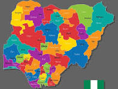

Clement Enukaorah
About Me
My name is Clement Enukaorah. I am from Nigeria. I have a background in applied biochemistry, physics, nursing, and education. I am also a university lecturer with a strong interest in science, research, and technology.
My Web Development Journey

I am studying software engineering through BYU-Pathway. My goal is to develop practical skills in HTML, CSS, JavaScript, and programming. Through WDD 131, I am learning how to design and develop responsive websites.